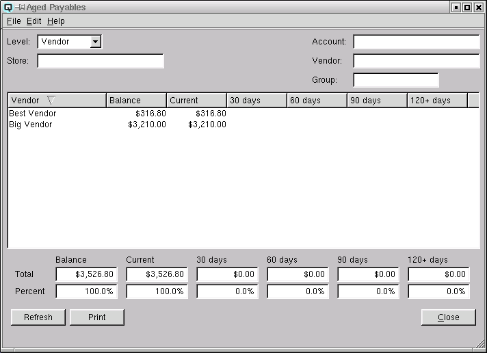
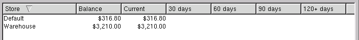
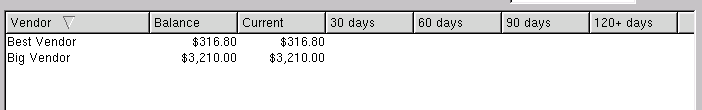
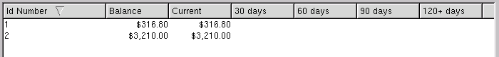

Aged Payables

Aged payables may be viewed by store, vendor or transaction. You
may also filter out data you do not wish to view. For example, you can
look at the aged payables for just a specific store, a specific
vendor or a specific vendor group.
Level
There are three possible levels to view.
-
- Store - displays one combined line of detail for each store.

- Vendor - displays one combined line of detail for each
vendor.

- Transaction - displays one line of detail for each
transaction.

Quasar has a handy drill down feature that allows you to drill down
and view more detailed data. Simply double click on a line in the
display table and Quasar will display the next level of detail. You
can drill down directly into the transaction.
Store
Select the store to view. Selecting a store displays only
aged payables from the selected store. All other aged payable
information is filtered out.
Account
Select the payable ledger account to view. Selecting a ledger
account displays only aged payables linked to that
ledger account. All other aged payable information is
filtered out.
Vendor
Select the vendor to view. Selecting a vendor displays only
aged payables for the selected vendor. All other aged payable
information is filtered out.
Group
Select the vendor group to view. Selecting a vendor group
displays only aged payables from the selected group. All other
aged payable information is filtered out.
Display Table
The aged payable window breaks payable transactions down into
aged periods based on the current date.
-
- Current (0-29 days old)
- 30 Days (30-59 days old)
- 60 Days (60-89 days old)
- 90 Days (90-119 days old)
- 120+ Days (120-149 days old)
The totals are listed at the bottom of the window along with the
percentage that each total is of the total payable balance.
Refresh
Clicking on refresh will refresh the data on the screen.
Print
Select this function to print the contents of the aged payables screen to the printer.